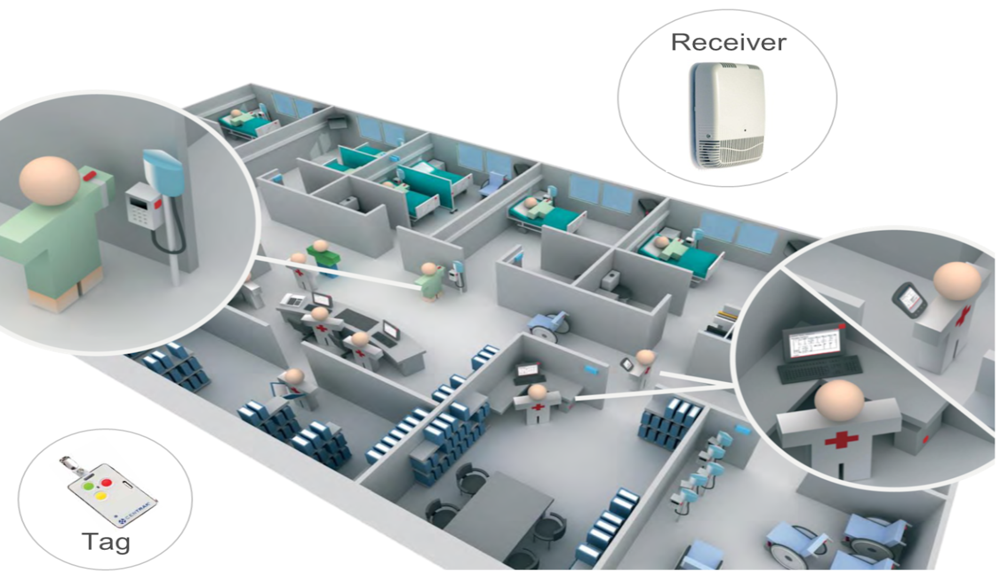
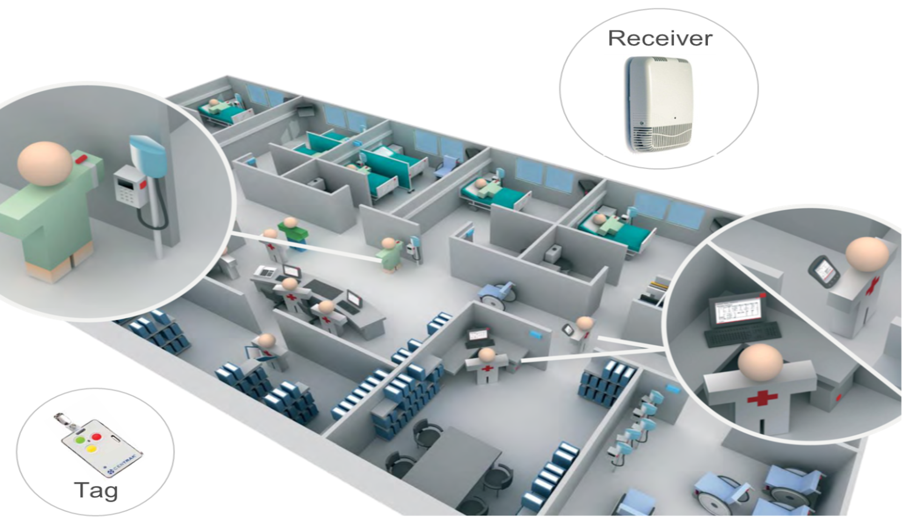

Project information
- Category: Optimizationn
- Client: Medical Facilities (Various)
- Jacobs role: Space optimization
- Contact: David Morgareidge
- Learn More: www.example.com
Challenges
Populations across the globe are growing and aging, increasing the demand for new and expanded healthcare facilities and hospitals. At the same time, patient demographics, standards of care, nursing models and patient journeys are changing. More sustainable and sophisticated healthcare infrastucture is required.
Solution
Jacobs combines leading edge information and operational technology with deep domain expertice to provide holistic solutions to make clients make better business decisions. Discrete models were used to create a digital representation of all work that occurs within and around a facility and are used to review and rank-order hundreds of design alternatives to maximise the entire solution space.
Benefits
Our solution for medical facilities offers the following advantages:
- Performance of the models is assessed using the same key performance indicators that will be used to evaluate the actual bui;d facility once its operational
- The model includes both first costs and lifecycle FTE costs, helping to make intelligent trade offs between the two
- Predictive analytics allows to test hundreds or thousands of fidelity solutions prior to construction